Introduction

The story starts with Rikka, the protagonist of the game, reminiscing about her time in the apartment and how long she's been living there. She then talks about moving onto the next chapter of her life, implying that she is moving out. After that dialogue, the game starts where Rikka only have 3 days left and is faced with the task of packing up her belongings before her move.
Day 1
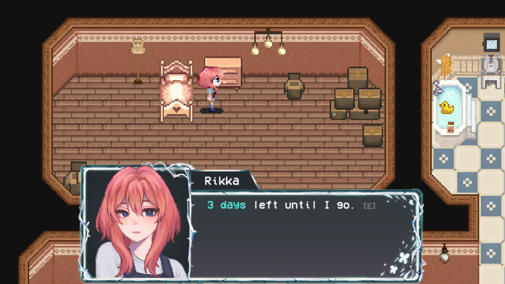
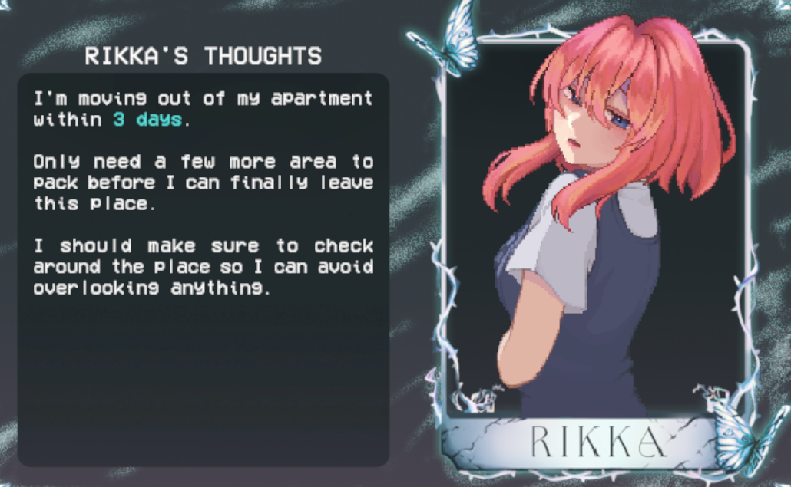
Rikka, with only 3 days left, decided to pack up the kitchen. Walking around the apartment, Rikka expresses her thoughts when interacting with the different objects around the apartment.
In Rikka's thoughts, she takes note of checking around the place to avoid overlooking anything.
"I'm moving out of my apartment within 3 days.
— Rikka
Only need a few more area to pack before I can finally leave this place.
I should make sure to check around the place so I can avoid overlooking anything."
Rikka packs up the kitchen items up until it's time for the night.
Night 1
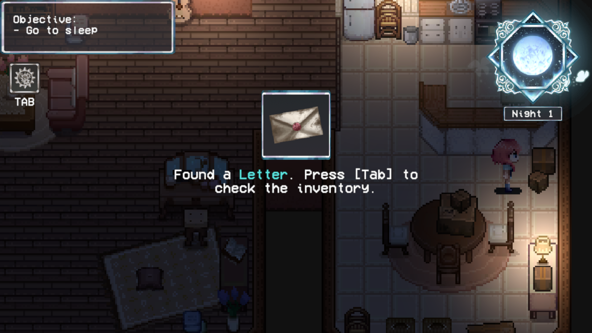
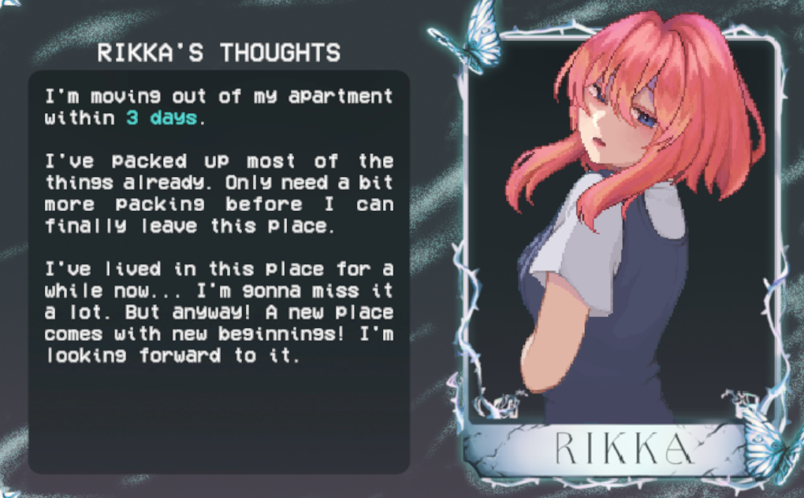
Rikka finished packing the kitchen where she remembers finding a letter during her packing. If the player checks their inventory, they will find that content is a faded birthday letter.
In Rikka's thoughts, she mentioned leaving the apartment in 3 days, packing up most of her things already. She notes missing the apartment but remained optimistic for the future.
"I'm moving out of my apartment within 3 days.
— Rikka
I've packed up most of the things already. Only need a bit more packing before I can finally leave this place.
I've lived in this place for a while now... I'm gonna miss it a lot. But anyway! A new place comes with new beginnings! I'm looking forward to it."
Feeling tired after a long day of packing, Rikka decides to rest for the night.
Dream 1

Rikka finds herself dreaming about her birthday where she is asked by a vague figure, which the player will later on find out is Ren, about making three wishes. She is then given a letter by the figure before they ate the birthday cake together. After eating the cake, Rikka opens the letter, only to find a letter inked with blood that says "Do you remember?" The figure scares Rikka, chasing her into the distorted hallways filled with broken objects.
Ren: "Happy Birthday, Rikka!"
Ren: "Make three wishes."
Rikka: "Why three?"
Ren: "So I can fulfill them."
Ren: "Say the first two out loud... And for the last one..."
Ren: "Just keep it in your heart. If you say it out loud, it won't come true."
Rikka: "Okay..."
Rikka: "I wish for you to never ever leave me... and for us to stay together forever."
Rikka: "And for my last wish..."
Rikka: "..."
Rikka: "...Done."
Rikka: "What's this?"
Ren: "A letter for you. It's my wish for you."
Ren: "You know I'd never leave you, right?"
Ren: "I'll always be watching over you."
Rikka: "███..." (Rikka mentions Ren's name)
Ren: "Let's eat for now. You can read that later."
Rikka: "Alright."
...
Rikka: "Can I read the letter now?"
Ren: "Sure."
Rikka: "..."
Rikka: "H-huh?"
Rikka: "...███?"
███:"You forgot didn't you?"
Day 2
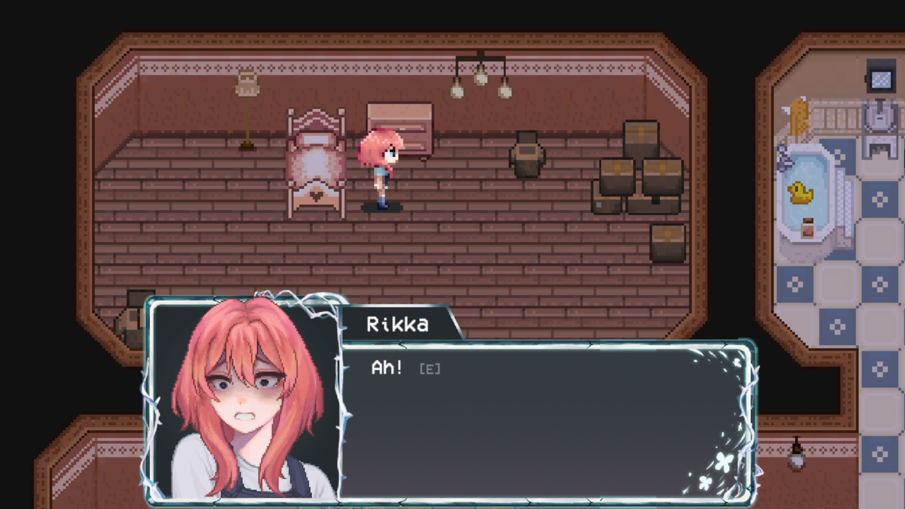
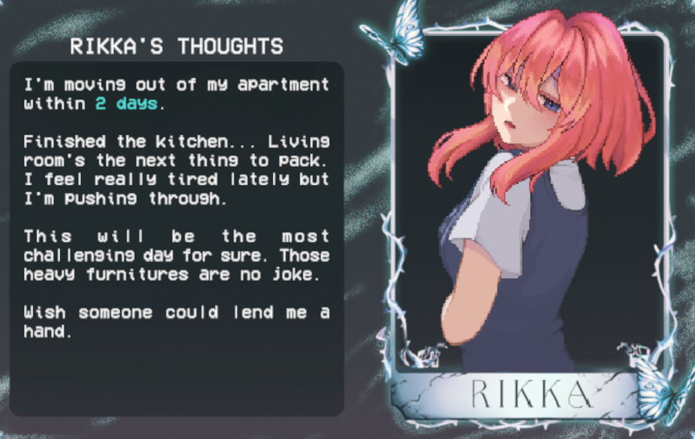
Rikka, startled, wakes up from the nightmare. Thinking it was just caused by her recent exhaustion, she tries to shake off the unsettling dream by focusing on her next task. With only 2 days left, she decides to pack up the living room.
In Rikka's thoughts, she mentions being tired lately but determined to push through, noting that today will be a challenging day with the task of packing the living room.
"I'm moving out of my apartment within 2 days.
— Rikka
Finished the kitchen... Living room's the next thing to pack. I feel really tired lately but I'm pushing through.
This will be the most challenging day for sure. Those heavy furnitures are no joke.
Wish someone could lend me a hand."
Night 2
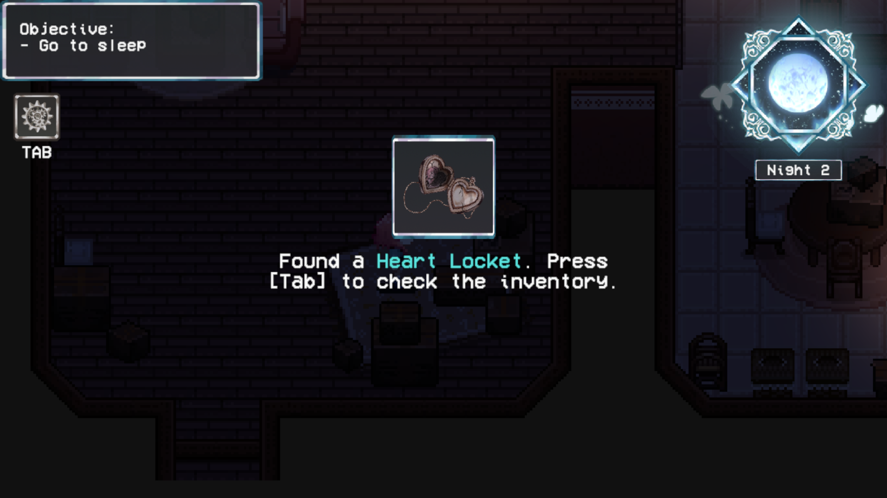
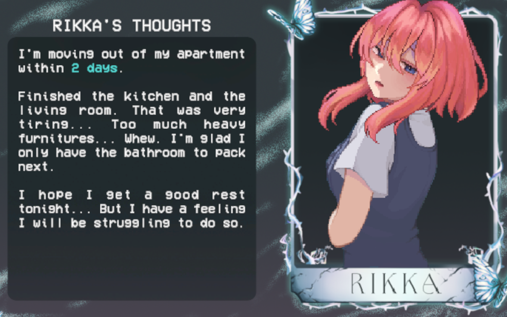
Rikka finds herself exhausted from the day's efforts, especially after dealing with the heavy furniture. While packing, a locket caught her eye and decided to check it out after finishing. If the player checks their inventory, they will find the broken locket with a faded photo of her hugging what she assumed is a teddy bear with how unrecognizable the photo is now.
In Rikka's thoughts, she mentioned being exhausted and hoping for a good rest.
"I'm moving out of my apartment within 2 days.
— Rikka
Finished the kitchen and the living room. That was very tiring... Too much heavy furnitures... Whew. I'm glad I only have the bathroom to pack next.
I hope I get a good rest tonight... But I have a feeling I will be struggling to do so."
Rikka heads to bed after a long day of packing the living room.
Dream 2

The dream begins with Rikka receiving a locket from Ren, following a conversation about their future together. Ren explains his decision to leave for education, and Rikka expresses her concerns and feelings of abandonment. Rikka asks if Ren forgot about her wish and he told her that she's the one who forgot about him, leaving Rikka confused but the dream took a turn when the locket morphed into eyeballs, surrounding the room, turning into a nightmare.
Ren: "Rikka, I want you to have this locket."
Rikka: "It's us... It's so lovely... but why would you give me this so suddenly?"
Ren: "Well... I wanted you to have something to remind me by."
Rikka: "Haha, that sounds so ominous. Seriously, what's with this?"
Ren: "I'm going to ████ to pursue my education. I want you to have that while I'm gone."
Rikka: "████...?"
Rikka: "But- But that's so far away!"
Rikka: "...You're gonna leave me...?"
Ren: "I'm not leaving you, Rikka. I'll only be away in the meantime."
Ren: "I'm doing this for my dream... For us. You know how much this means to me."
Ren: "You know I'd never leave you, right?"
Rikka: "So you're fine being away from me for a long time?"
Ren: "I never said that Rikka, I-"
Rikka: "Why didn't you ask me about this? Did you forget about my wish?"
Rikka: "████..."
Ren: "Rikka..."
Ren: "I didn't forget."
Ren: "But you did. You forgot about me, didn't you?"
Rikka: "What do you mea-"
Rikka: "...!"
Day 3
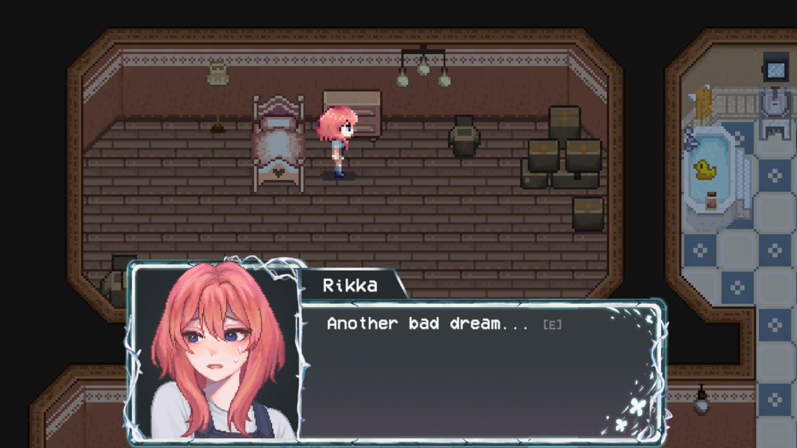
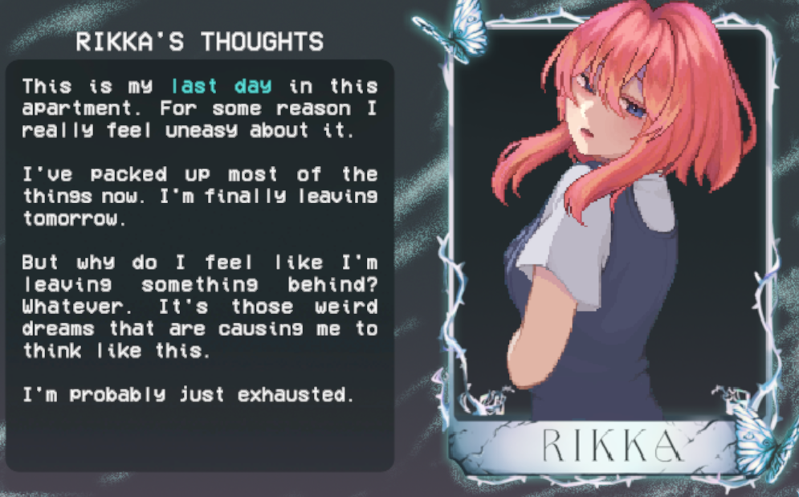
Rikka wakes up from the nightmare, feeling confused and unsettled. Despite the unsettling experience, she tries to gather her thoughts and prepare for the day ahead, packing the bathroom next.
In Rikka's thoughts, she reflects on her situation and the emotions she's experiencing. She leaves the apartment the next day and yet she feels a sense of unease.
"This is my last day in this apartment. For some reason I really feel uneasy about it.
— Rikka
I've packed up most of the things now. I'm finally leaving tomorrow.
But why do I feel like I'm leaving something behind? Whatever. It's those weird dreams that are causing me to think like this.
I'm probably just exhausted."
As she packs up in the bathroom, she opens the cabinet mirror to find a pill bottle in there, grabbing it. When she closed the cabinet, the mirror was stained with blood, spelling out a message 'Find me'. On the reflection, she sees figures creeping up on her back, causing her to flee the bathroom.
Night 3?
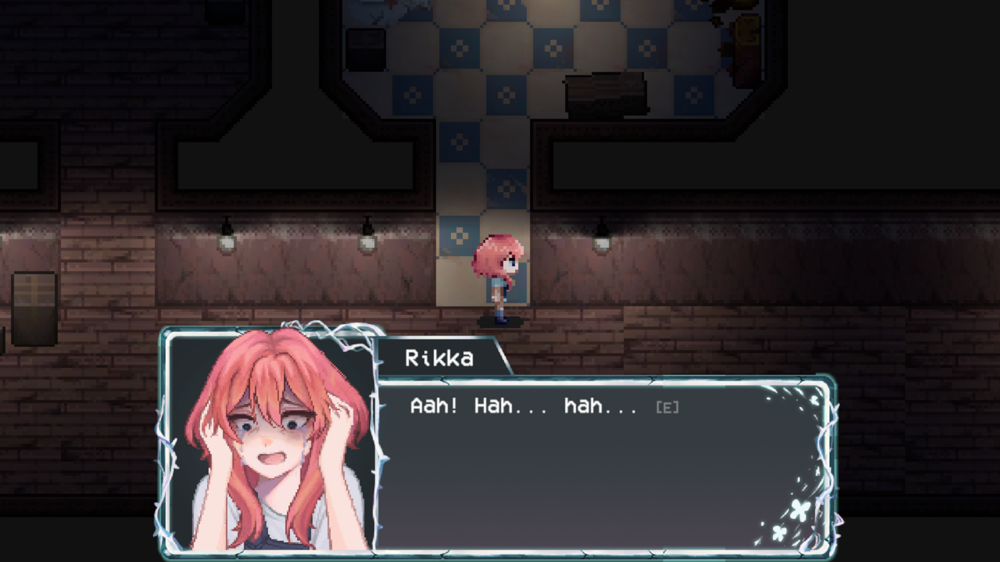
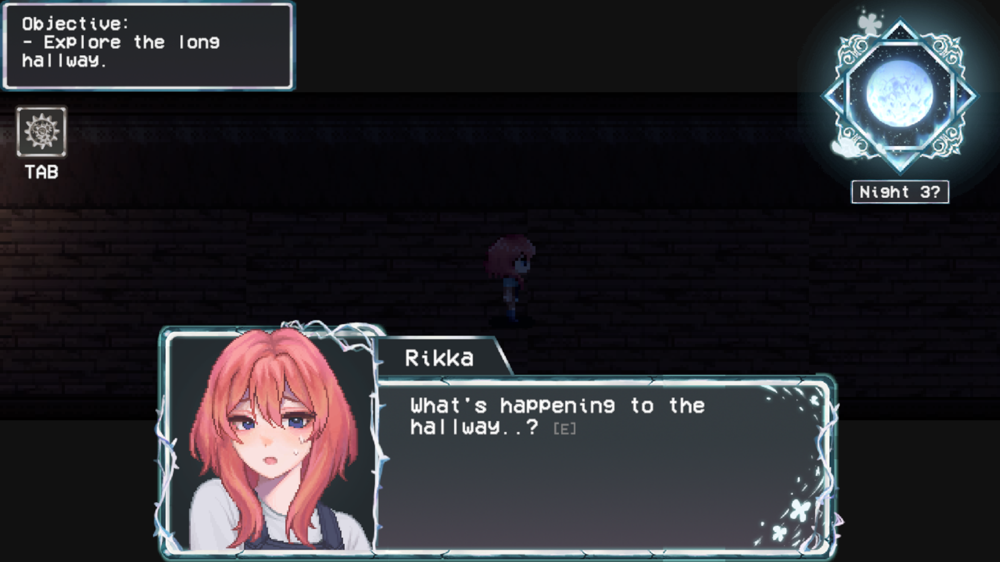
Upon fleeing the bathroom, Rikka finds herself in the hallway, heart racing. She looks around nervously, trying to make sense of what just happened. Thinking it was just exhaustion, she tries to calm down. Noticing a long hallway ahead that was never there before, she hesitates, eventually proceeding forward.
In Rikka's thoughts, she wonders if she's losing her mind from the exhaustion or if she's dreaming.
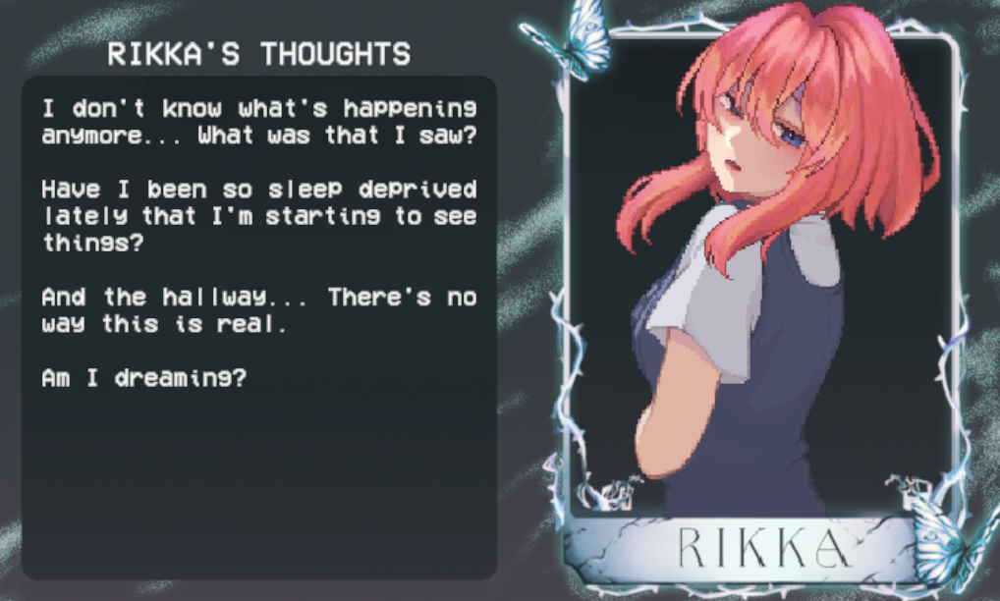
"I don't know what's happening anymore... What was that I saw?
— Rikka
Have I been so sleep deprived lately that I'm starting to see things?
And the hallway... There's no way this is real.
Am I dreaming?"
While exploring the long hallway, an eye entity appears behind her, chasing her down the hallway.
Ending
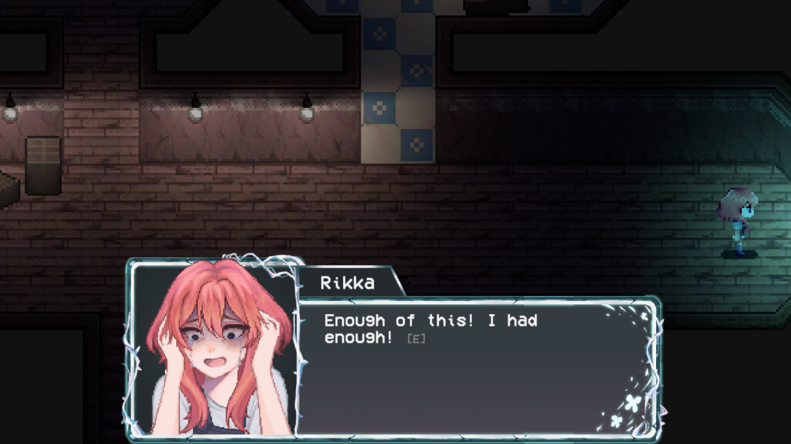
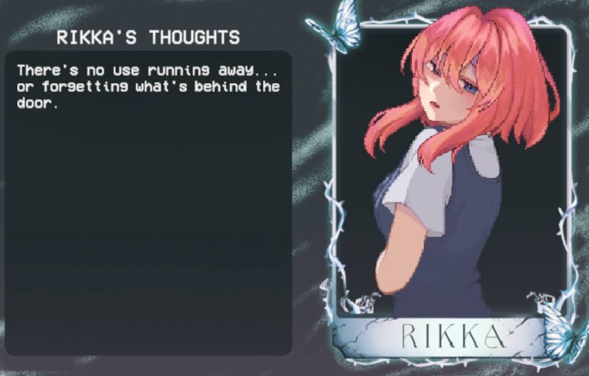
Rikka snaps from her daze, realizing she's been walking in circles. She looks around, disoriented, and notices the entire apartment has changed. The long hallway was no longer there and was replaced by a door, seemingly calling out to her. The truth was right in front of her. She decided to face the truth she's been concealing in her mind.
"There's no use running away... or forgetting what's behind the door."
— Rikka
A flashback scene unfolds. An argument ensues between Rikka and Ren. Rikka, planning to use pills, tried to sabotage Ren but it didn't go as planned. Cutting to the present moment, Rikka is holding the very same pill bottle, asking for forgiveness before using it herself, promising Ren she'll be with him always.
Rikka: "W-what's this? You're planning on leaving me?"
Ren: "..."
Rikka: "Why...? We have everything here, you have me in here, you don't need any of this."
Ren: "You have to understand, my love. This is the best for both of us."
Rikka: "B-but..."
Rikka: "I can't believe you."
Rikka: "You belong to me, Ren. Only mine."
Rikka: "With this, I'll always be with you, Ren... And you'll always be mine, my love."
Rikka: "Ren..."
Rikka: "...I'm so sorry... Please forgive me..."
Rikka: "I'll be with you now..."
Rikka: "We'll be together forever."
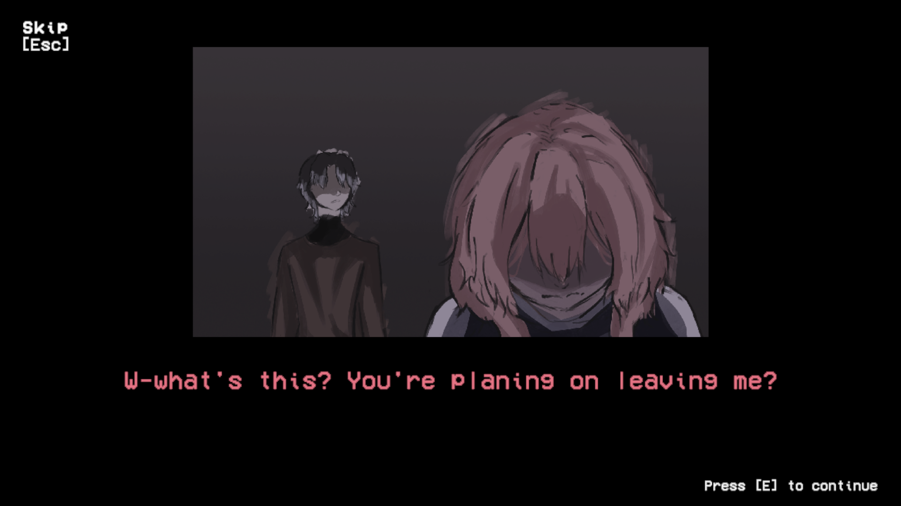
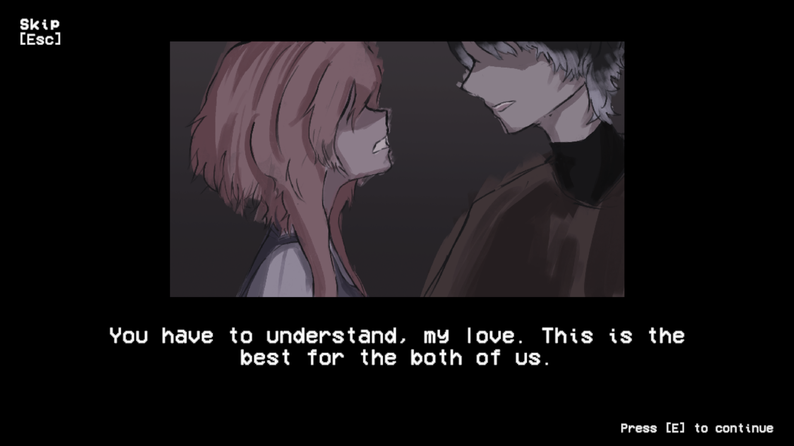